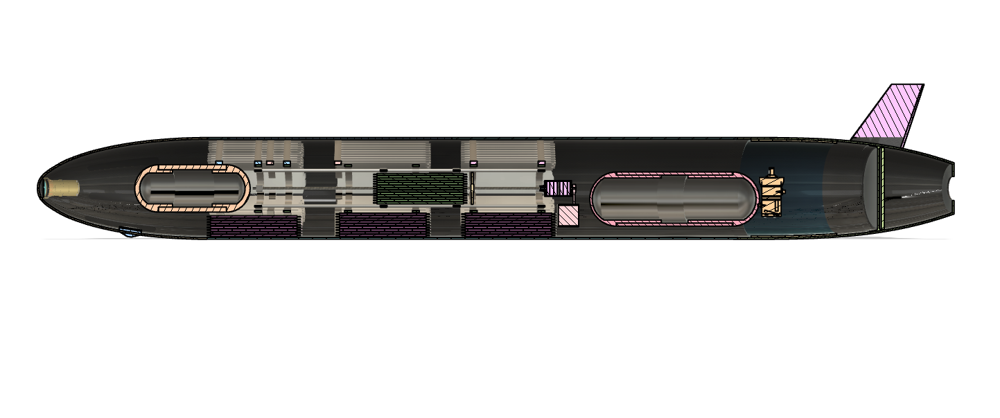
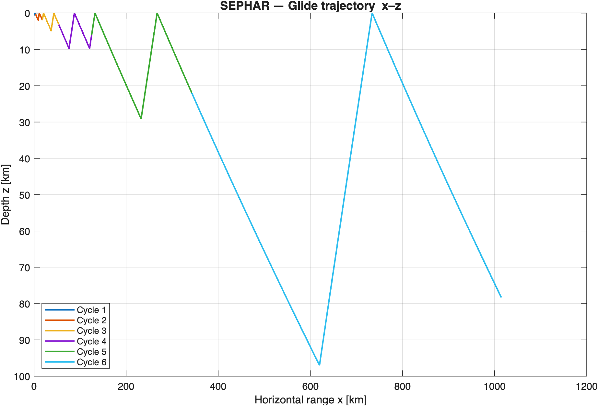
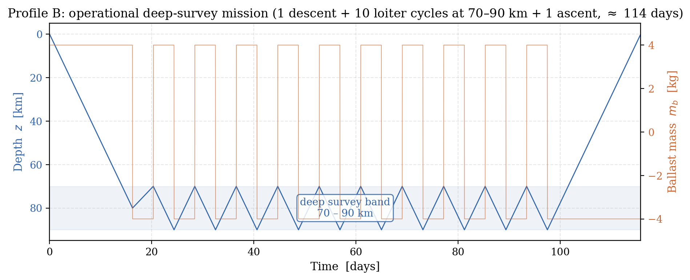

SEPHAR: Underwater Glider for Europa
Design, flight dynamics and control of an autonomous buoyancy-driven glider for the subsurface ocean of Europa (Jupiter). The vehicle is statically unstable in pitch by design and is flown by a cascaded controller sized from CFD results. BSc thesis in Aerospace Engineering, Universidad Europea de Madrid.

Mission
Europa has a saltwater ocean up to about 100 km deep under its ice shell. A vehicle there has to withstand up to 174 MPa, operate without GPS or light and run for months on a single battery. The mission profile is six dives of increasing depth, from 500 m to the seafloor at 100 km.
Vehicle and actuators
No propellers: the glider sinks and rises by changing its buoyancy, and the hydrofoils turn that vertical motion into forward glide. Attitude is controlled with internal masses instead of control surfaces in the flow.
- Buoyancy engine: hydraulic pump moving oil to an external bladder, ±8.4 kg authority.
- Pitch: 6.5 kg sliding mass on two lead screws driven by a stepper motor, 300 mm travel.
- Roll: 4.2 kg tungsten eccentric mass rotating 360° for coordinated turns.
- Heading: aft rudder, ±20°.
- Near-isopycnal hull (compressibility matched to 77 % of the water) so the buoyancy authority holds down to 100 km.

Dynamic model
Longitudinal model derived from the Graver (2005) 6-DOF formulation for buoyancy-driven gliders, with 9 states: inertial position, pitch angle and rate, two body-frame velocities, pitch-mass position and momentum, and ballast mass. It includes hydrodynamic added mass, Europa's gravity (1.315 m/s²) and the residual hull compressibility, and takes lift, drag and pitching moment from polynomial fits of the CFD results. Integrated in MATLAB with ode15s, with the energy of the pump, the pitch actuator and the electronics as extra states.
Control
The positive Munk moment makes the bare airframe unstable in pitch (Cmα = +0.197 /rad), so trim is held actively with a cascaded controller:
- Phase logic: hysteretic state machine that switches between descent and ascent at 97 % of the target depth and near the surface.
- Outer loop: proportional law from pitch error to desired mass position, Kp,θ = 3.0 m/rad.
- Inner loop: feedforward + PD on the mass position, Kp = 10 N/m, Kd = 18 N·s/m.
- Buoyancy: first-order lag on the pump command (τ = 60 s) with flow-rate saturation.
The outer gain is sized from the CFD moment: the worst destabilising moment at trim (2.36 N·m) sets a minimum gain of 0.93 m/rad at full mass travel, so the adopted 3.0 m/rad gives a 3.2× margin.
Navigation
Defined at concept level: the pressure sensor gives depth, the only absolute position reference under the ice; an IMU gives attitude and dead reckoning; an acoustic modem gives ranging and data transfer at the ice-water interface between dives.
Hydrodynamics (CFD)
Geometry in Fusion 360 and RANS simulations in OpenFOAM (k-ω SST and Langtry-Menter transition) over a sweep of angles of attack, cross-checked with a panel method in XFLR5. The results give the lift, drag and pitching-moment fits used by the dynamic model, the maximum L/D of 4.84 and the negative static margin that the controller has to handle.
Results
- Pitch trim held at about ±5° in every dive despite the open-loop instability.
- Trim glide at 0.43 m/s, 2.9° angle of attack and 57 mm/s vertical speed.
- Full 6-dive mission to 100 km in 74.9 days, with over 1,000 km of horizontal range.
- 3,483 Wh used out of an 8,400 Wh battery: 63 % electronics, 37 % buoyancy pump, under 1 Wh for the pitch actuator.

Optimised operational mission
The six-dive profile above is a demonstration that the vehicle works across the whole water column. A real science campaign would stay deep: one descent to 80 km, ten loiter cycles in the 70–90 km band near the seafloor and one ascent to a recharge station, about 114 days with 82 of them inside the survey band.
- Without changes this mission needs 17.4 kWh, about twice the battery, so it is not feasible on one charge.
- Pre-charging the oil pressure vessel to the equivalent of 50 km depth cuts the pump energy by 73 % and the total to 7.2 kWh, 86 % of the battery.
- Matching the pre-charge to the loiter centre (80 km) cuts the pump energy by 86 %.
- The same pre-charge penalises surface-returning dives, so this configuration only makes sense for long missions near the seafloor.

Limitations and next steps
The simulation covers the longitudinal plane only. The roll mass and the rudder are sized but not simulated, and navigation is not modelled. Next steps: a 6-DOF model with roll and heading loops and current disturbances, and a GPS-denied navigation filter combining depth, inertial data and acoustic ranging.